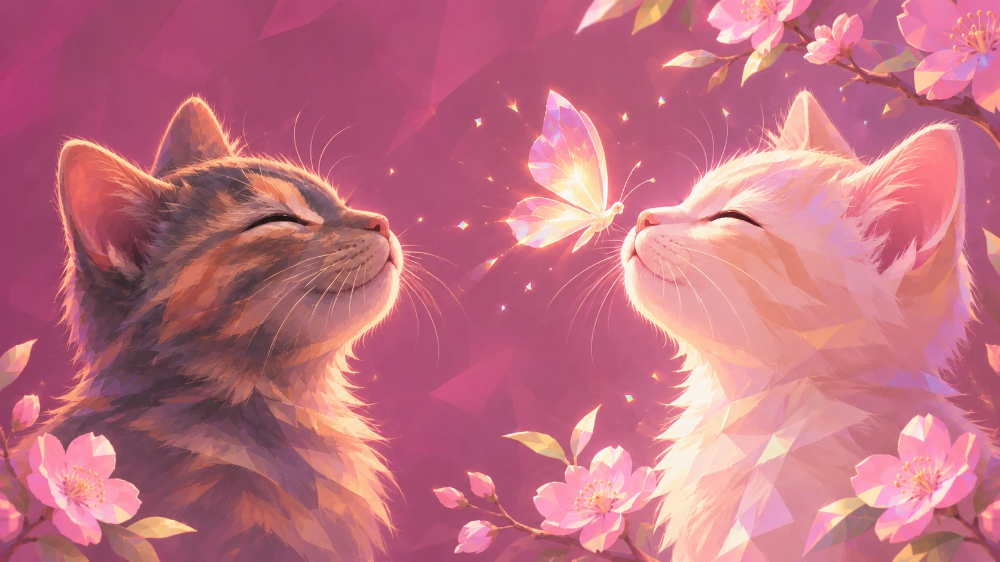
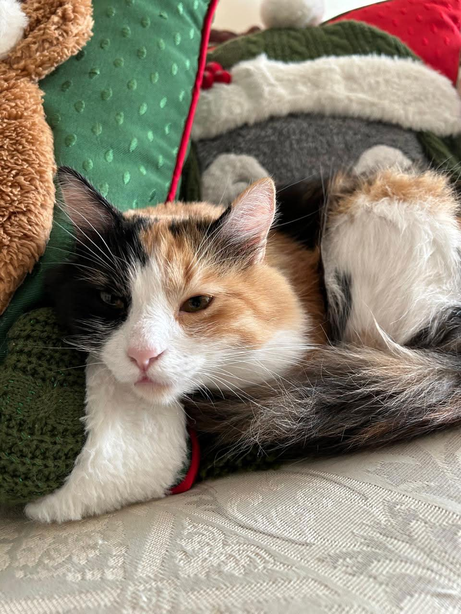

La vida es mejorcon bigotes.
Cuidados, pequeñas travesuras y esos momentos
que hacen de una casa un hogar.
Nini y Manchas.
Una vidita juntas.
Este bonito rincón comienza con mis primeras gatitas, Nini y Manchas, y con su manera de estar siempre a mi lado en cada pequeño momento.
Aquí caben las fotos desenfocadas, los pelos en la ropa y todo lo que vamos aprendiendo al compartir la casa con ellas.
Soy fan de tener mil y una fotos de ellas, y ni así me basta. Siempre quiero guardar más recuerdos de las dos.
Abrir nuestro álbum¿Tienes 5 minutos
de lectura?
Un michi llegó a mi vida
Prepara su rincón y deja que te conozca a su ritmo.
Leer la guía Abre en otra pestañaSUS PRIMEROS CUIDADOSSu primera visita al vet
Qué llevar a la consulta, qué preguntar y cuándo buscar ayuda.
Leer la guía Abre en otra pestañaA SU PLATITO¿Qué le doy de comer?
Elige su alimento y arma una rutina de comidas.
Leer la guía Abre en otra pestañaMenos prisa.
Más estar juntitas.
A veces, cuidarlas es dejarles su lugar favorito.
Y aprender a disfrutar del nuestro.
Veinte fotos.
Mil ganas de otra.
Hay miradas que
ya son casa.
Manchas, en una de esas fotos que no necesitan una ocasión especial.
una más para el carrete ♡Todas las fotos de este álbum son de Nini y Manchas.Hay momentos
que se tienen que ver.
Sus siestas ya tienen fotos. Sus ocurrencias también tendrán video.
Tu prueba se queda aquí; no se sube a internet.

AQUÍ EMPIEZA EL VIDEODIARIOEn tu casa seguro
también pasa.
La silla que ya no es tuya. La caja que no puedes tirar. El carrete lleno de la misma carita. Cuéntanos eso tan de tu michi.
aquí nos entendemos ♡
Historias de sus gatitos
El rincón de historias abrirá cuando esté lista la versión completa.